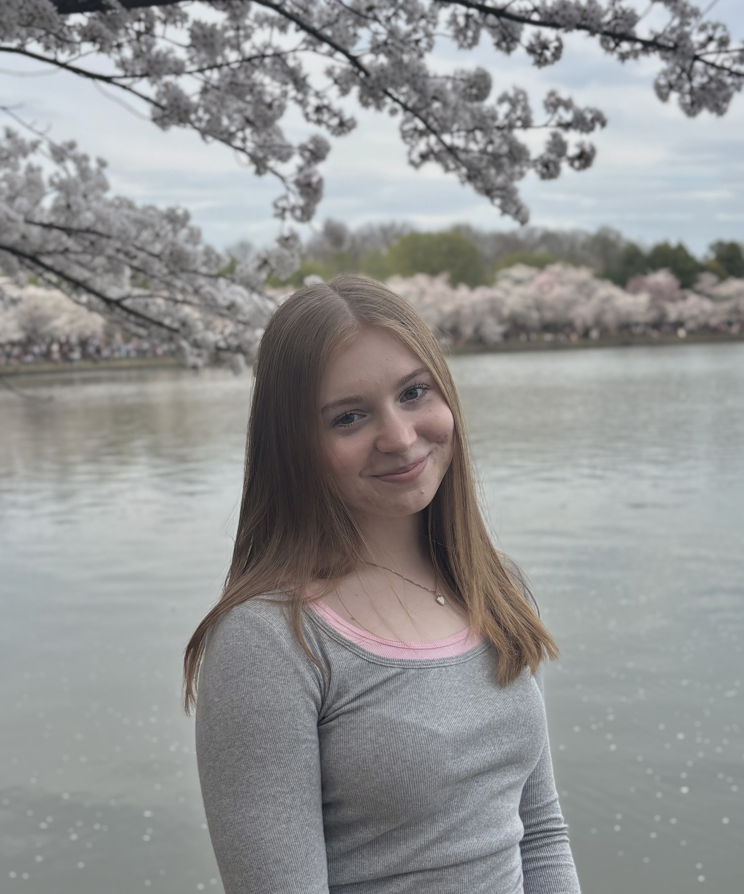

Read my Work!Hello! Welcome to my portfolio page. I am currently a sophomore studying journalism and creative writing at the University of Maryland, College Park. I was born and raised in Pittsburgh, PA, but decided to go to college at UMD because of its top-tier journalism school and proximity to Washington, D.C. My expected graduation date is May 2028, after which I hope to enter the professional world of journalism and land a job reporting for a city or local news outlet.
My work has been featured in publications including the Pittsburgh City Paper, Her Campus Maryland and The Diamondback, which is the University of Maryland’s independent student newspaper. I was first hired as a junior staff writer at The Diamondback in January 2025. For one semester, I covered the University Senate and higher education beat and pitched and wrote one story per week. Then, in Fall 2025, I transitioned to becoming a full-staff writer, pitching and writing two stories per week. Other beats I have covered during my time at The Diamondback include justice, equity and identity and city and campus development. Most recently, I was hired to be an assistant news editor at the publication. I am so excited to begin exploring more of the editing side of journalism through that role.
My time so far at UMD’s Philip Merrill College of Journalism and The Diamondback has allowed me to gain invaluable reporting experience. I have covered breaking news events, interviewed countless peers and experts, learned how to master assigned beats, written long-form enterprise and feature stories and collaborated with other students to produce high quality work. I have also developed journalism skills outside of general news writing, as I have taken courses in news videography and interactive design and development. I have experience with Adobe Indesign, Photoshop and Premiere Pro, as well as Canva and various social media platforms. I also know how to write basic code in Python, HTML and R Studio. Finally, I am an intermediate Spanish speaker.
My ultimate career goal is to write feature articles or political enterprise stories for a city or local news publication. Through my work, I strive to spotlight the lives and interests of the general public, and I love talking to people about their unique thoughts and experiences.